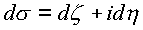
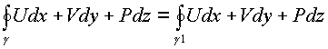
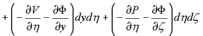
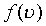
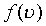
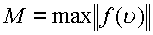
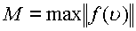
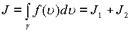
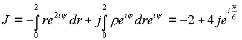
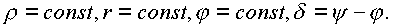

|
В. И. ЕЛИСЕЕВ ВВЕДЕНИЕ В МЕТОДЫ ТЕОРИИ
ФУНКЦИЙ ПРОСТРАНСТВЕННОГО КОМПЛЕКСНОГО ПЕРЕМЕННОГО |
|
1.3.2. Интеграл и первообразная.
Определение интеграла вдоль кривой С в комплексном пространстве по виду ничем не отличается от определения интеграла в действительной и комплексной областях.
где
- точки, разбивающие С на n участков, а и б есть концы С,При доказательстве существования интеграла в комплексной плоскости Z предел сводили к двум интегралам от действительных функций. В пространстве предел достаточно свести к интегралам от комплексных функций. В самом деле
,
. Обозначим также , . Подставляя в интегральную сумму получим
Переходя к пределам получим
Существование интеграла в комплексном пространстве сводится к существованию двух комплексных интегралов
Функции
а также имеем
. Подставляя в интеграл и отделяя все интегралы с мнимыми коэффициентами получим
.
Существование криволинейного интеграла свелось к существованию и определению криволинейных интегралов от функций четырех действительных переменных. Для исследования этих интегралов необходимо обратиться к теоремам Стокса, Грина, Остроградского.
Рассмотрим формулу Грина. Пусть функции от двух действительных переменных
и их частные производные непрерывны в простой области G. Тогда справедливо равенство, где
криволинейный интеграл берется по границе  области G в
положительном направлении., так что формула
Грина связывает интеграл по границе области с
интегралом по самой области. Важнейшим
условием в определении интеграла является
свойство области G. Введено
определение. Область G на
плоскости называется односвязной, если для
любого замкнутого контура, лежащего в этой
области, ограниченная им часть плоскости целиком
принадлежат области G. Для
таких областей независимость криволинейного
интеграла от пути интегрирования определяется
следующими условиями :
области G в
положительном направлении., так что формула
Грина связывает интеграл по границе области с
интегралом по самой области. Важнейшим
условием в определении интеграла является
свойство области G. Введено
определение. Область G на
плоскости называется односвязной, если для
любого замкнутого контура, лежащего в этой
области, ограниченная им часть плоскости целиком
принадлежат области G. Для
таких областей независимость криволинейного
интеграла от пути интегрирования определяется
следующими условиями :
1.Для любого замкнутого контура
.
2. Для любых двух точек А,В в
области G криволинейный интеграл не зависит от
кривых  ,расположенных
в этой области.
,расположенных
в этой области.
3. Выражение является полным дифференциалом
функции F(x,y), существующей в
области G, такой, что. При этом для
любой кривой  из области G имеет
место равенство
из области G имеет
место равенство
Все три условия эквивалентны равенству
, выполняемому в области G.В пространстве трех действительных переменных имеет место формула Стокса, сформулированная следующим теоремой
:Пусть гладкая
xyz проектируемая ориентируемая поверхность Ф ограничена кусочно-гладким контуромИмеют непрерывные частные производные первого порядка. Тогда справедлива формула
,
где контур
для любого контура
Независимость криволинейного интеграла от пути интегрирования доставляется также тремя условиями
:1) если выполняется равенство
;2) если выполняется условие
;3) если выражение Udx+Vdy+Pdz является полным дифференциалом некоторой функции F(x,y,z), определенной в области G
, так что
Все три условия заменяются тремя равенствами
Поверхность Ф в формуле Грина расположена на одной проекционной площадке. Сочетание двух независимых переменных (
X,Y) дают одну проекционную площадку.Поверхность Ф в формуле Стокса имеет три проекционные площадки. Сочетание из трех по два рано трем.
Пространственный комплексный интеграл сначала свели к двум комплексным интегралам, каждый из которых определен на комплексной плоскости
.Функцииимеют частные производные
.В комплексном пространстве можно определить область
G, ограниченную кривой С с соблюдением всех условий теоремы и формулы Грина. Применяя формулу Грина к криволинейному интегралу, выраженному в пространственных комплексах (z,Два интеграла

Как следствие получаем условие независимости криволинейного интеграла в пространстве в комплексном виде
Эти условия были исследованы при исследовании комплексного аргумента. Раскрывая частные производные по законам комплексного анализа, получим систему необходимых условий в действительных функциях от четырех действительных переменных. Из первого условия
приравнивая действительные и мнимые части в равенстве, получим
,
Из второго соотношения получим следующую систему равенств
Таким образом, из комплексных соотношений получены необходимые условия независимости криволинейного интеграла от пути в пространстве в действительных выражениях. Покажем, что эти соотношения имеют место в пространстве. Координатное пространство от четырех независимых переменных будет иметь шесть проекционных площадок
. К каждому из интегралов применим формулу Грина и Стокса получим:
=


Независимость каждого криволинейного интеграла от пути в комплексном пространстве зависит от равенства нулю 24-х соотношений между частными производными, стоящими в подынтегральных скобках по каждой проекционной площадки поверхности Ф в пространстве.
Все 24-ре соотношения соответствуют равенствам, выведенным из условия независимости пространственного криволинейного интеграла, выраженного через комплексные независимые
Z,. Подынтегральные соотношения получены циклической перестановкой частных производных по проекционным площадкам дедуктивным распространением формул Стокса и Грина в четырехмерное действительное пространство. Таким образом, фактически обоснована формула Грина и Стокса в четырехмерном действительном пространстве.
Условия независимости криволинейного
интеграла в пространстве от пути С
интегрирования аналитической функции  позволяют интеграл записать через интеграл
позволяют интеграл записать через интеграл
,где - концы кривой С.В пространстве справедлива теорема о первообразной функции для интеграла. Следуя законам действительного и комплексного анализа Z, разберем теорему о первообразной функции. Если функция
 ,имеет
производную равную для всех точек области Д
пространства, то функция будет первообразной функцией .Докажем, что
интеграл
,имеет
производную равную для всех точек области Д
пространства, то функция будет первообразной функцией .Докажем, что
интеграл
 ,
,  рассматриваемый от своего верхнего
предела, также является аналитической функцией в
Д пространства
рассматриваемый от своего верхнего
предела, также является аналитической функцией в
Д пространства  , причем
, причем
Определение производной в пространстве не изменено, поэтому для направлений с исключением изолированного, которое рассмотрим отдельно будем иметь
В силу непрерывности
Первый предел равен
Если
по изолированному направлению , тоВ первом случае
Второй предел запишем, используя свойство интеграла в виде
для изолированного направления.
Таким образом  , что и требовалось доказать. Все
классические функции анализа, имеющие табличные
производные, определены в пространстве и имеют
первообразную, так что
, что и требовалось доказать. Все
классические функции анализа, имеющие табличные
производные, определены в пространстве и имеют
первообразную, так что
В пространстве  справедливо следующее
утверждение: Интеграл от
аналитической функции
справедливо следующее
утверждение: Интеграл от
аналитической функции
 в
односвязной области G вдоль
любого замкнутого контура С, лежащего в G, равен нулю..
в
односвязной области G вдоль
любого замкнутого контура С, лежащего в G, равен нулю..
Основные свойства интегралов в действительной и комплексной области остаются в силе и в пространстве.
, где a, b –любые действительные и комплексные постоянные.
, где -определяют кривую
 , где кривая,
проходимая в противоположном направлении кривой
С. В силе остается еще одно свойство интеграла :
Пусть  на кривой С и L длина С, и длина кривой по
изолированному направлению, тогда
, где кривая,
проходимая в противоположном направлении кривой
С. В силе остается еще одно свойство интеграла :
Пусть  на кривой С и L длина С, и длина кривой по
изолированному направлению, тогда
,или .
Это свойство вытекает из определения интеграла
, где есть длина ломаной , вписанной в кривую С, так что в пределе при получаем L, а по изолированному направлению . Откуда и вытекает свойство.
Пример .
Вычислить криволинейный интеграл по кривой С от точки
Ввиду того, что функция
Рассмотрим решение в пространственных комплексных координатах
.В этом случае точкаможет быть представлена двумя точками пространственной комплексной плоскости
.Интеграл распадается на два криволинейных интеграла
Рассмотрим для примера путь
, гдеИнтеграл
На линии
z—имеем , .
Следовательно по пути
Окончательно получим

Таким образом, получен предыдущий результат. Криволинейный интеграл не зависит от пути интегрирования.
Вычислим тот же интеграл в цилиндрических пространственных координатах
В этих координатах
, откуда имеем :
, следовательно
Согласно вышеизложенной теории интеграл также распадется на два интеграла
, гдеИнтегрирование произведем по сумме простейших кривых в пространстве, чтобы на каждой из них изменялся один параметр из четырех рис
Интеграл по прямой 0—1 вычисляется при следующих параметрах
, на линии 1—2 имеем
Рассмотрим путь 1—3, на котором

На линии 3
—5 меняется уголПроизведем суммирование полученных результатов
Результат соответствует ранее вычисленному. В цилиндрических координатах когда комплексы, составляющие элемент пространства имеют разные углы
поворот около изолированной оси одного комплекса z, относительно другого можно охарактеризовать появлением контура типа 1—2—3—4 (Рис. 24). Контур интегрирования 1—3—4 или контур 1—2—4 может быть заменен кривой 1—4, находящейся на цилиндрической поверхности, выделенной контуром 1—2—3—4. Отрезок контура 4—5 в этом случае характеризуется следующими параметрами Это находится в строгом соответствии с представлением комплекса в виде.Рис. 24. Независимость криволинейного интеграла от пути в пространстве.
. Комплекс,
стоящий в скобках ,состоит из отрезка ,идущего
по действительной оси и криволинейного отрезка,
находящегося на цилиндрической аппликате
радиуса
и имеющего начало в  точке ,которая имеет угол равный
нулю, и точки ,которая находится на высоте и закручена по
этой цилиндрической аппликате на угол
точке ,которая имеет угол равный
нулю, и точки ,которая находится на высоте и закручена по
этой цилиндрической аппликате на угол . Этот комплекс
повернут как одно целое на угол
. Этот комплекс
повернут как одно целое на угол .
.
Каждая точка
z на плоскости Z в пространствеВычисление криволинейного интеграла в пространстве следует проводить в два этапа
:- в плоскости Z, приняв ;
- в плоскости , приняв
Мини оглавление:
[0], [1.1.1, 1.1.2, 1.1.3, 1.1.4, 1.1.5, 1.1.6, 1.1.7, 1.1.8, 1.2, 1.2.1, 1.2.2, 1.2.2.a, 1.2.2.b, 1.2.2.c, 1.2.2.d, 1.2.2.e, 1.2.2.f, 1.2.2.g, 1.2.2.h, 1.2.3, 1.3.1, 1.3.2, 1.3.3, 1.3.4, 1.3.5, 1.3.6, 1.4.1, 1.4.2, 1.5, 1.6, 1.7.1, 1.7.2, 1.7.3.1, 1.7.3.2, 1.7.3.3, 1.7.4.1, 1.7.4.2, 1.8.1], [2.1, 2.2],[3.1, 3.2, 3.3, 3.4.1, 3.4.2, 3.4.3, 3.4.4, 3.4.5],[4.1, 4.2, 4.3, 4.4],[5.1, 5.1.Рис.52, 5.2, 5.3, 5.4, 5.4.Т1, 5.4.Т2, 5.4.Т3, 5.5.1, 5.5.2, 5.5.3, 5.5.4],[6.1.1, 6.1.2, 6.2.1, 6.2.2, 6.2.3, 6.2.4, 6.2.5, 6.3, 6.4.1, 6.4.2, 6.5.1, 6.5.2],[7.1, 7.2, 7.3, 7.4, 7.5, 7.6, 7.7.1, 7.7.2, 7.8.1, 7.8.2, 7.8.3, 7.9],[8.1, 8.2.1, 8.2.2, 8.3, 8.4, 8.5, 8.6, 8.6.T1, 8.7, 8.8.1, 8.8.2, 8.8.3, 8.9.1, 8.9.2, 8.9.3, 8.10, 8.10.T2, 8.10.T3],[9.1, 9.2, 9.3, Рис.88, 89, 90, 91, 92, 93, 94, 95, 96, 97, 98, 99, 100],[10.1, 10.2, 10.3, 10.4, 10.5, 10.6, 10.7, 10.8, 10.9, 10.10, 10.11, 10.12, 10.13, 10.14, 10.15.1, 10.15.2, 10.16.1, 10.16.2, 10.17, 10.18],[11]
Размещенный материал является электронной версией книги: © В.И.Елисеев, "Введение в методы теории функций пространственного комплексного переменного", изданной Центром научно-технического творчества молодежи Алгоритм. - М.:, НИАТ. - 1990. Шифр Д7-90/83308. в каталоге Государственной публичной научно-технической библиотеки. Сайт действует с 10 августа 1998.
E-mail: mathsru@gmail.com